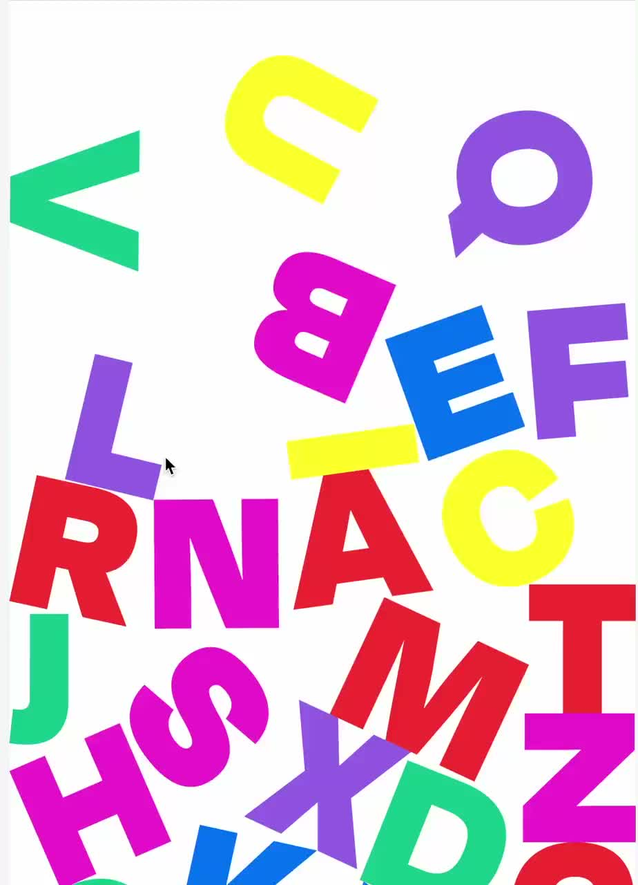
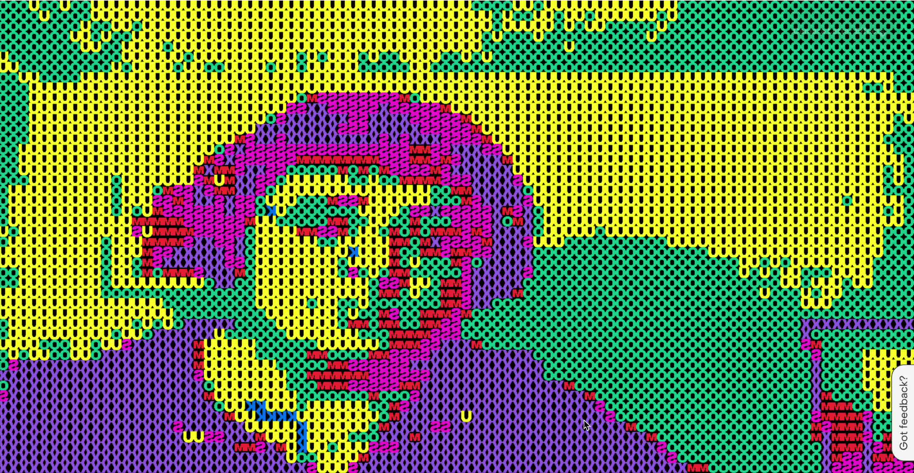
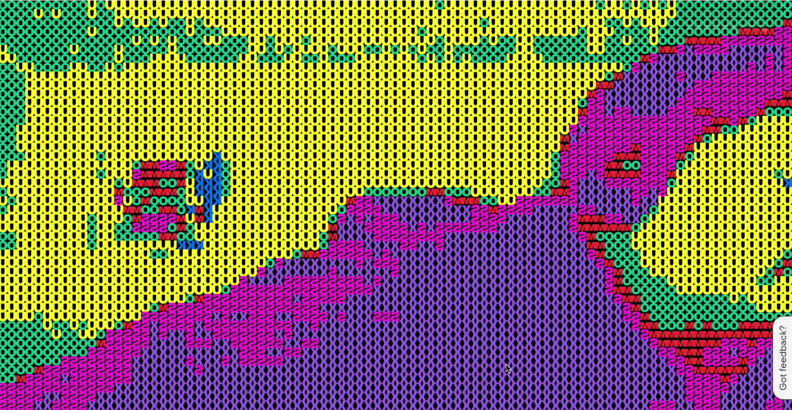
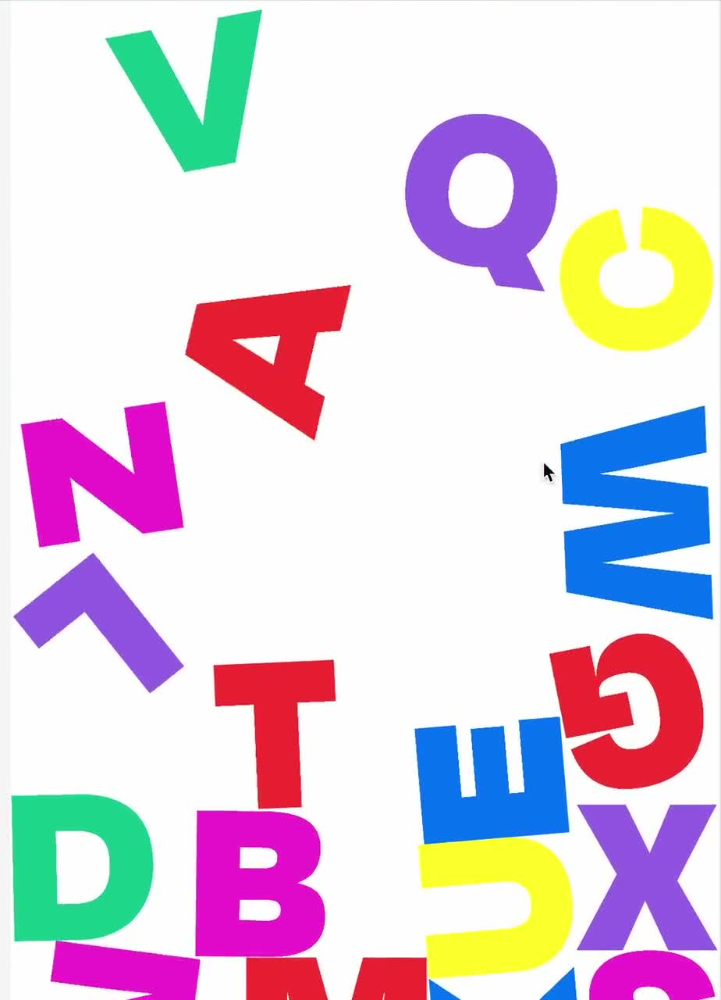
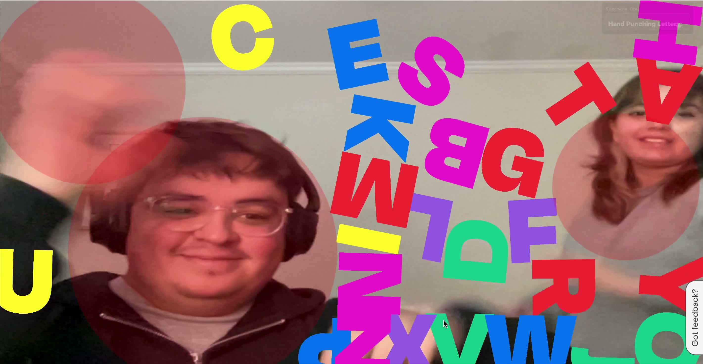
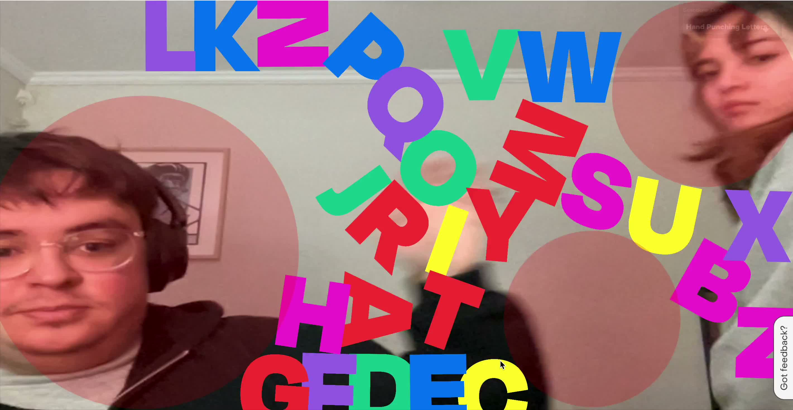

Interactive Letters
Mayo 2025
Exploración visual interactiva con letras y animación generativa.
Proyecto experimental diseñado para postular a convocatoria de obras en
Museo Interactivo Mirador. Utiliza programación creativa para manipular
letras de forma interactiva y visualmente atractiva, combinando código y
diseño gráfico.
Para ver más sobre el proyecto haz click aquí.
Para ver más sobre el proyecto haz click aquí.





